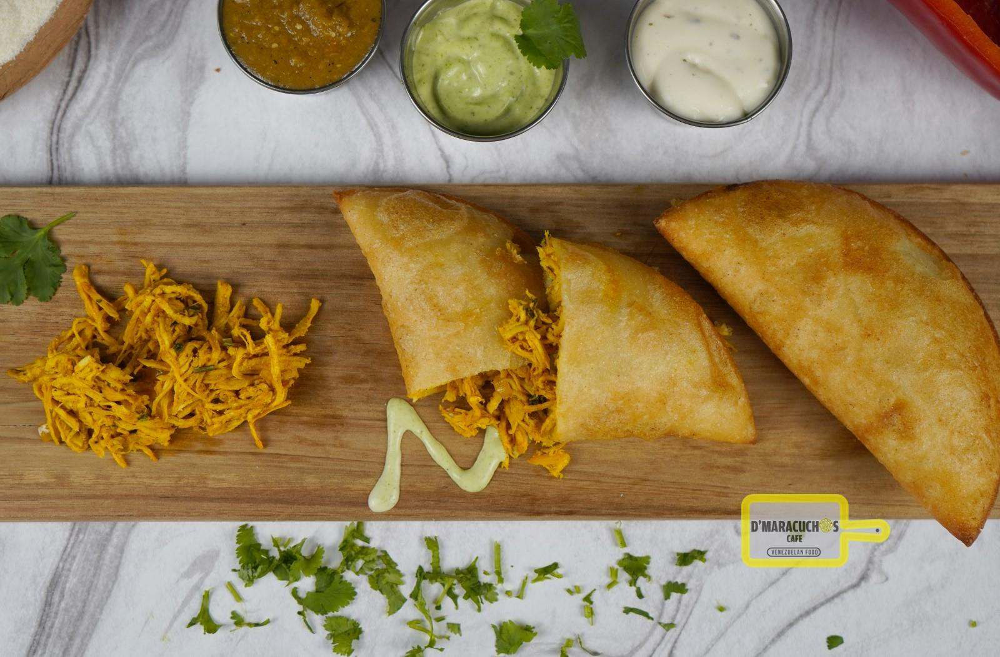
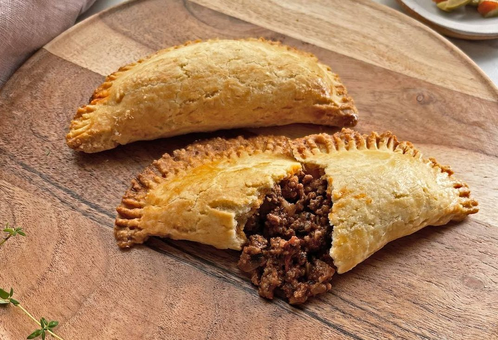

Tipos de Empanadas
-
Queso con Maiz
Empanada suave y cremosa rellena de queso fundido y maíz fresco. Una combinación perfecta de texturas que resalta el sabor dulce del maíz. Ideal para quienes buscan algo diferente y delicioso..
Ver negocio -

Pollo
Jugosa empanada con pollo desmenuzado y especias selectas. Sazonada con cebolla y pimientos para un toque casero. Un clásico irresistible para cualquier momento.
Ver negocio -

Carne molida
Rellena de carne molida jugosa, preparada con un toque de especias tradicionales. Su masa dorada y crujiente complementa este clásico sabor dominicano. Perfecta para los amantes de lo salado.
Ver negocio -

Pepperoni con Queso
Una explosión de sabor con pepperoni perfectamente sazonado y queso derretido. Cada bocado combina lo mejor de la tradición y la innovación. Perfecta para los fanáticos de lo sabroso.
Ver negocio -
Completo
Empanada rellena con una mezcla de carne, queso, vegetales y huevo. Un todo-en-uno delicioso que combina texturas y sabores. Ideal para disfrutar de un almuerzo rápido y completo.
Ver negocio -

Vegetales
Ligera y saludable, esta empanada incluye una mezcla de vegetales frescos. Perfecta para quienes buscan una opción más ligera pero igual de sabrosa. ¡Llena de colores y sabor
Ver negocio -

Jamon y Queso
Un clásico que nunca falla: jamón tierno y queso derretido en su interior. Ideal para quienes buscan un sabor tradicional pero lleno de confort. ¡Una opción sencilla y deliciosa!
Ver negocio -

Pollo y Salsa blanca
Jugoso pollo desmenuzado bañado en salsa blanca cremosa. Suaves notas de especias hacen de esta empanada un deleite único. Perfecta para los amantes de lo gourmet.
Ver negocio -
Cuatro quesos
Empanada rica y cremosa rellena con una combinación de mozzarella, parmesano, cheddar y queso azul. Un paraíso para los amantes del queso en cada bocado.
Ver negocio -

Champiñones con Queso
Champiñones salteados combinados con queso fundido crean un relleno jugoso y aromático. Una opción vegetariana que deleita incluso a los paladares más exigentes.
Ver negocio